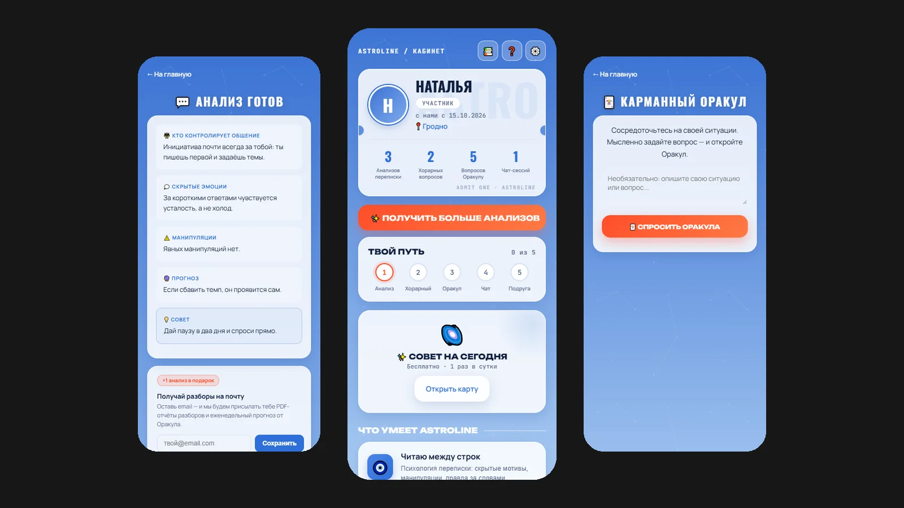

Astroline
ИИ-экосистема под ключ для астропсихологической платформы: Telegram-бот и Mini App, которые читают переписку между строк, отвечают на вопросы по хорарной астрологии и поддерживают в чате. Сделала всё сама, от кода до автомаркетинга.

Задача
Сделать для астропсихологической платформы продукт, которым человек пользуется прямо в Telegram, без установки приложений: загрузил переписку или задал вопрос и через минуту получил понятный разбор. И сразу заложить монетизацию и продвижение, чтобы продукт не зависел от ручного труда.
Что сделано
- ИИ-анализ переписки: кто контролирует общение, скрытые эмоции, манипуляции, прогноз и совет. Можно вставить текст или до 5 скриншотов
- «Ответ звёзд»: хорарная астрология, ответ «да / нет / возможно» с разбором сигнификаторов и сроков
- «Карманный оракул»: 300 афоризмов Грасиана, ответ на ситуацию одним точным советом
- Чат с ИИ-психологом Лео и бесплатный «Совет на сегодня» раз в сутки
- Монетизация: тест-драйв, пакеты и подписка Premium с оплатой через Telegram Stars
- Удержание: онбординг, прогресс «Твой путь», гид на трёх языках, бонусный анализ за подписку на email
- Безопасность: проверка подписи Telegram на каждом запросе, переписка не сохраняется и не используется для обучения ИИ
- Автомаркетинг: контент-агент ASTRA сам пишет и публикует посты платформы
Признание
Проект стал кейсом сразу двух программ школы Дмитрия Ледовских – «AI Эксперт» и «НейроСтарт»: карточка кейса.